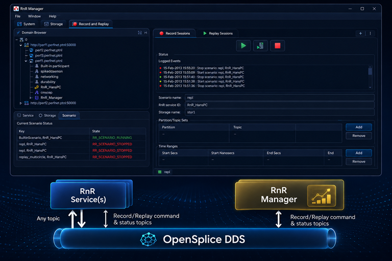

Tools
Record and Replay Manager Tools
← Back- Configure and Monitor your Record & Replay data
- Dynamic recording of any topic data in a DDS system
- Selective replay with variable speeds
- Dedicated RnR-Manager GUI for scenario-definition and data analysis
- RnR service has a complete distributed architecture
- Seamless integration with Tester, Tuner and all the other tools
